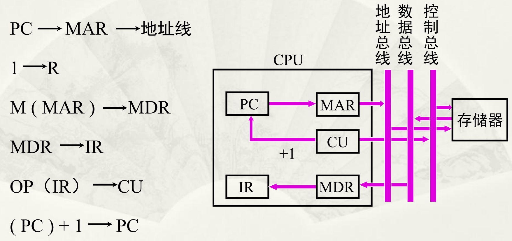
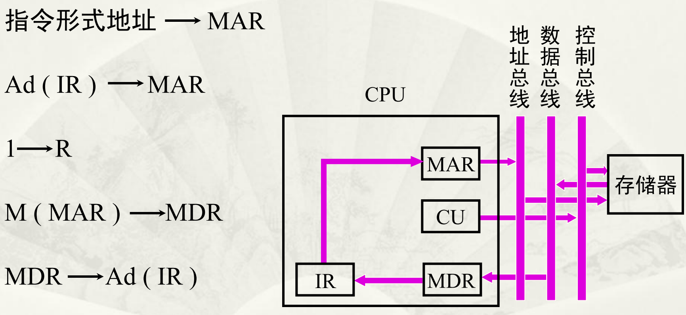
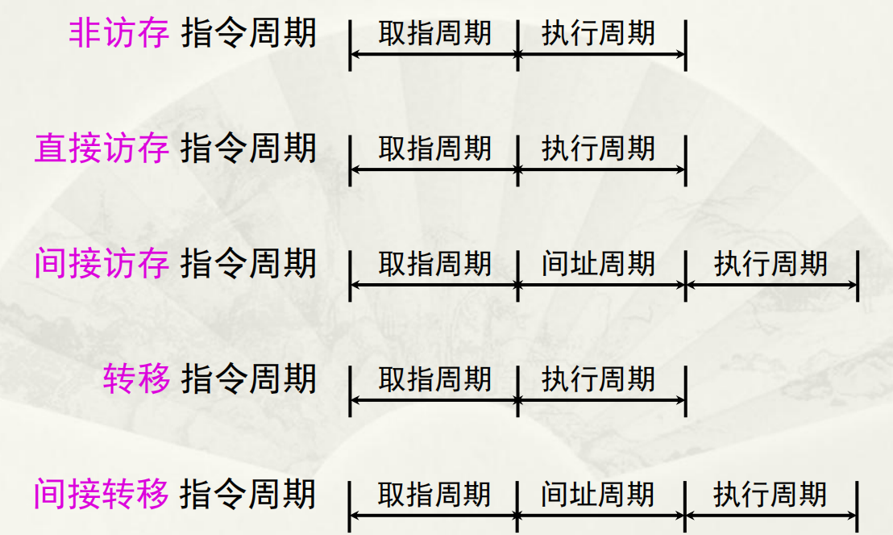
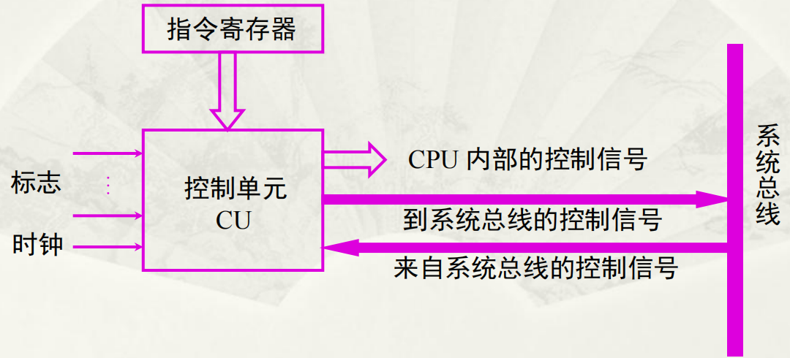
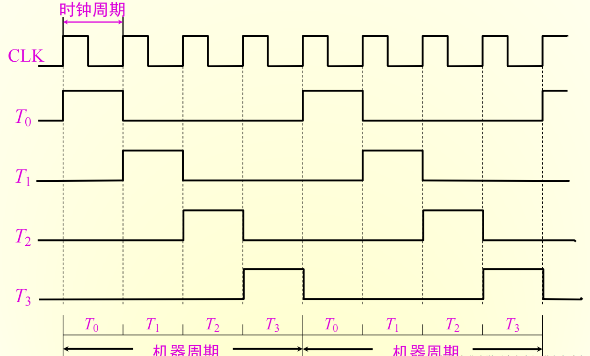
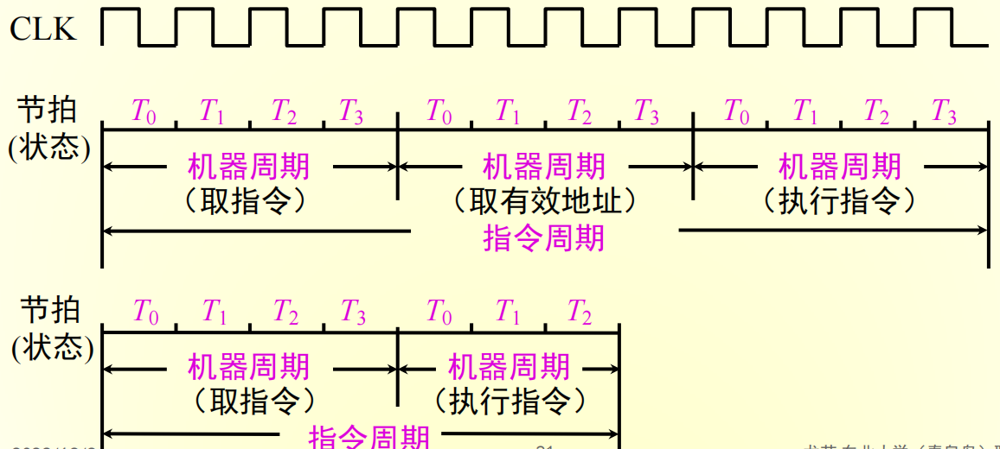
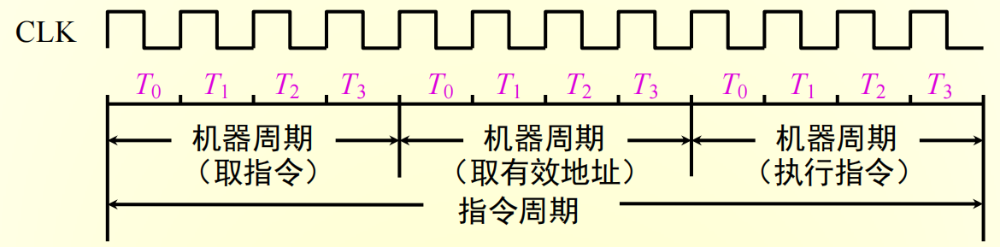
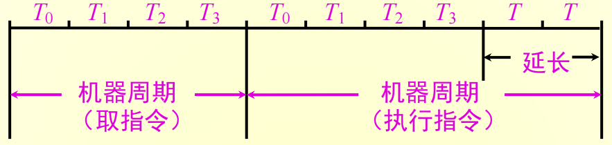
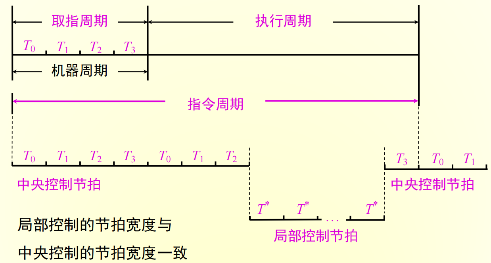

计算机组成原理第9章：控制单元的功能
1 微操作命令的分析
控制单元具有发出各种微操作命令（即控制信号）序列的功能。
1.1 取值周期
假设CPU内含有4个寄存器：
- MAR与地址总线相连，存放欲访问的存储单元地址
- MDR与数据总线相连，存放欲写入存储器的信息或最新从存储器中读出的信息
- PC存放现行指令的地址，有计数功能
- IR存放现行指令
取值周期的过程归纳如下：

1.2 间址周期

1.3 执行周期
不同指令的指令周期的微操作是不同的，下面分别讨论非访存指令、访存指令和转移类指令的微操作。
1.3.1 非访存指令
- 清除累加器指令CLA：
- 累加器取反指令COM：
- 算术右移一位指令SHR：
- 循环左移一位指令CSL：
- 停机指令STP：
1.3.2 访存指令
这类指令在执行阶段都需要访存存储器，这里只考虑直接寻址的情况，不考虑其他寻址方式。
1.3.2.1 加法指令ADD X
1.3.2.2 存数指令STA X
1.3.2.3 取数指令LDA X
1.3.3 转移指令
- 无条件转移指令JMP X：
- 条件转移（负则转）指令BAN X：
1.3.4 三类指令的指令周期

1.4 中断周期
在执行周期结束时刻，CPU要查询是否有请求中断的事件发生，如果有则进入中断周期。
在中断周期，由中断隐指令自动完成保护断点、寻找中断服务程序入口地址以及硬件关中断的操作。在中断周期需完成如下操作：

2 控制单元的功能
2.1 控制单元的外特性

2.1.1 输入信号
- 时钟：为了使控制单元按一定的先后顺序、一定的节奏法出各个控制信号，控制单元必须受时钟控制。
- 指令寄存器：控制信号和操作码有关
- 标志：CU有时需要依赖CPU当前所处的状态产生控制信号
- 来自系统总线（控制总线）的控制信号：如中断请求、DMA请求
2.1.2 输出信号
- CPU内的控制信号：用于CPU内的寄存器之间的传送和控制ALU实现不同的操作
- 送至系统总线（控制总线）的信号：例如，命令主存或Ｉ／Ｏ读写、中断响应等
2.2 多级时序系统
2.2.1 机器周期
机器周期可以看作所有指令执行过程中的一个基准时间，确定机器周期需要考虑每条指令的执行步骤和每一步骤所需的时间，可以有以下2种确定方式：
- 以完成最复杂指令功能的时间为基准
- 以访问一次存储器的时间为基准
由于不论执行什么指令，都需要访问存储器取出指令，因此在存储字长等于指令字长的前提下，取指周期也可以看作机器周期。
2.2.2 时钟周期
一个机器周期内可完成若干个微操作，每个微操作需一定的时间，将一个机器周期分成若干个时间相等的时间段（节拍、状态、时钟周期）。时钟周期是控制计算机操作的最小单位时间，用时钟周期控制产生一个或几个微操作命令。

2.2.3 多级时序系统
一个指令周期包含若干个机器周期，一个机器周期包含若干个时钟周期。同时，每个指令周期内的机器周期数可以不等，每个机器周期内的时钟周期数也可以不等。

机器周期、节拍（状态）组成多级时序系统。
2.2.4 机器速度与机器主频的关系
机器的主频越快，机器的速度也越快，在机器周期所含时钟周期数相同的前提下，两机平均指令执行速度之比等于两机主频之比。
机器速度不仅与主频有关，还与机器周期中所含时钟周期（主频的倒数）数以及指令周期中所含的机器周期数有关。
2.3 控制方式
控制单元控制一条指令执行的过程实质上是依次执行一个确定的微操作序列的过程。通常将如何形成控制不同微操作序列所采用的时序控制方式称为CU的控制方式。
常见的有同步控制、异步控制、联合控制和人工控制。
2.3.1 同步控制
同步控制方式是指任一微操作均由统一基准时标的时序信号控制，每一个微操作都是事先确定的。

在同步控制中，又划分为三种方案。
2.3.1.1 定长的机器周期
以最长的微操作序列和最繁的微操作作为标准机器周期，每个机器周期内的节拍数相同。
2.3.1.2 不定长的机器周期
采用这种方案时，每个机器周期内的节拍数可以不等。

2.3.1.3 中央控制和联合控制结合
这种方案将机器的大部分指令安排在统一的、较短的机器周期内完成，称为中央控制，而将少数操作复杂的指令中的某些操作采用局部控制方式。

2.3.2 异步控制方式
异步控制方式不存在基准时标信号，没有固定的周期节拍和严格的时钟同步，执行每条指令和每个操作需要多少时间就占用多少时间。
因此需要采用各种应答电路，故其结构比同步控制方式更加复杂。
2.3.3 联合控制方式
同步控制和异步控制相结合就是联合控制方式。
2.3.4 人工控制方式
人工控制是为了调机和软件开发的需要，在机器面板或内部设置一些开关或按键，来达到人工控制的目的。
- Reset（复位）键
- 连续或单条执行转换开关
- 符合停机开关
 微信
微信 支付宝
支付宝